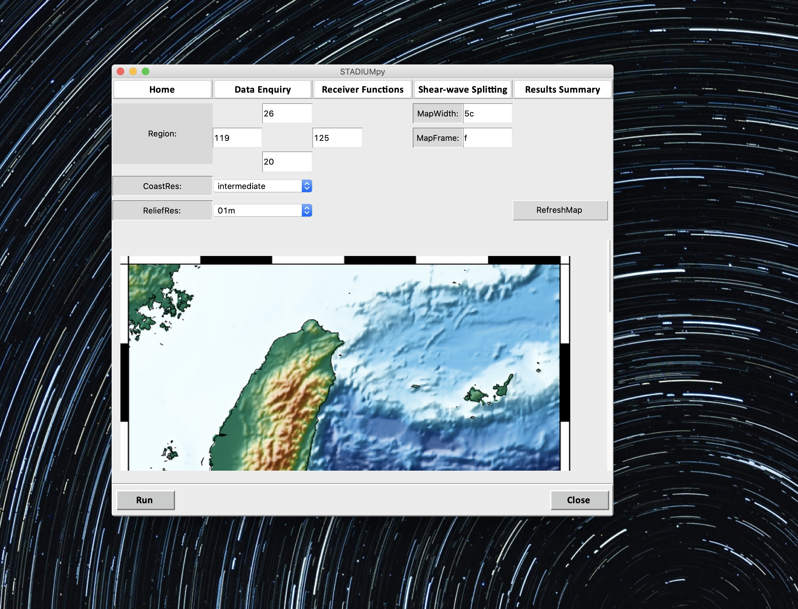
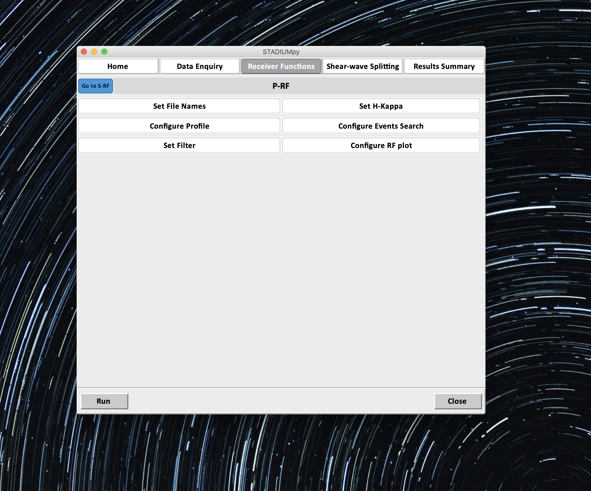
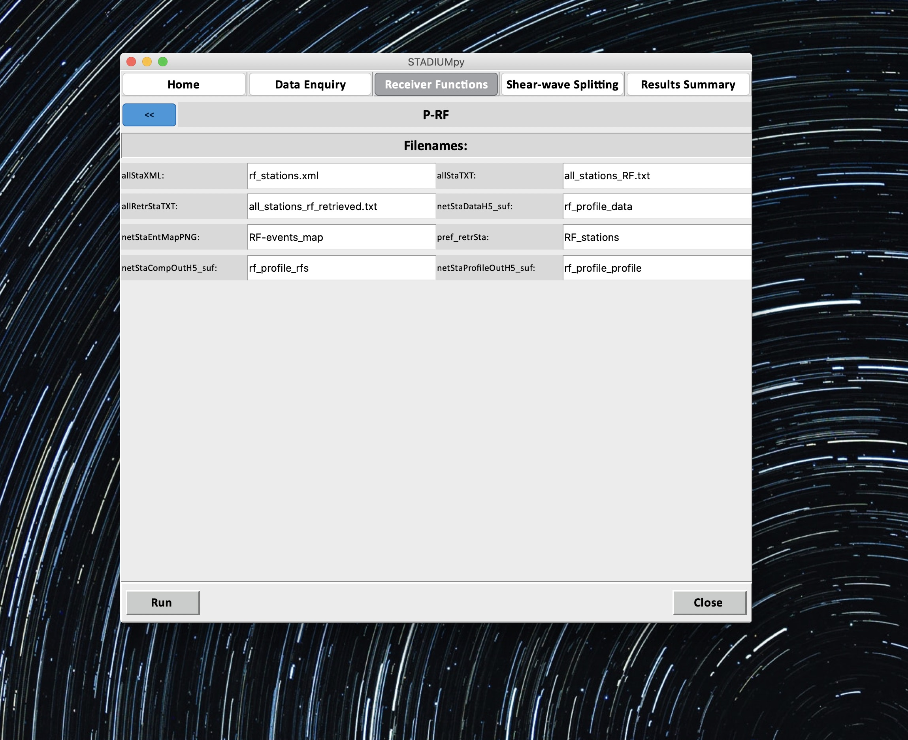

1 / 5

Home Page
2 / 5

Plot Map
3 / 5

Receiver Functions
3 / 5

Receiver Functions - Filenames
3 / 5
Receiver Functions - Plot Settings
Installation Steps
- Create Environment
conda create -n stadiumpy python=3.7 - Activate Environment and install packages
conda install -c conda-forge obspy=1.1.0: for seismic analysisconda install -c conda-forge pygmt=0.1.2=py37hc8dfbb8_0: for high resolution map plotting purposesconda install -c conda-forge shapely=1.7.0=py37hfcf0db4_3: Manipulation and analysis of geometric objects in the Cartesian plane (required for rf)conda install -c conda-forge cartopy=0.18.0=py37h08e9697_0: Drawing maps for data analysis and visualisation (required for rf)conda install -c conda-forge fortran-compiler:pip install obspyh5:required for rfconda install -c conda-forge tqdm=4.48.2=pyh9f0ad1d_0: progressbarpip install rf: receiver functions computationpip install splitwavepy: shear wave splitting measurements
Export environment
conda env export --name stadiumpy > stadiumpy_env.yml
❮
❯